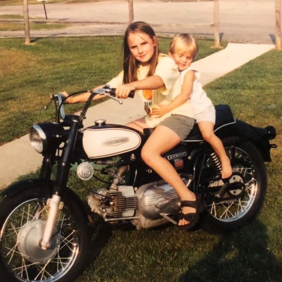

Who are you, and why are you doing this?#
I’m so glad you asked!
My name is Jessie Jamieson, and I’m a mathematician. I currently work at the Johns Hopkins University Applied Physics Laboratory, so, by default, I should say that anything I say in my blog about anything is my personal opinion and does not reflect the thoughts or opinions of JHUAPL, etcetera etcetera.
Now that the necessary disclaimer is out of the way, let me tell you a bit more about me. I’m a Tennessee girl, born and raised, and I just happen to be good at math. I used to have season passes to Dollywood every year. Yes, I’ve been to Gatlinburg. No, it’s not the world’s best vacation destination. Pal’s is a gift. If you know, you know.
Despite what commonly happens in Tennessee, I come from a pretty small family. In fact, I really only have one “blood relative” still alive and in contact with me, and that would be my little sister. I love her more than just about anything.
I also grew up riding motorcycles. If I post about hobbies ever, you might notice some motorcycle action shots, or comments about making sick new modz to my motorcycles. Before anyone asks, I ride a 2020 BMW R nineT /5, the really pretty bright blue one that they only made a few of. I also have a 2016 BMW R1200R that was custom built by DNKTuneworks out of Frederick, MD (shoutouts to Danielle up the road). In fifth grade, my dad bought me a dirt bike for my birthday. Before that, and only shortly after I could walk, my dad put me on the back of an old 1970’s Honda trail 70 that he’s had since forever. I couldn’t touch the ground even if I tried, so dad would hold the motorcycle up and sit me on it and let me go. If I made it back to him and was still on the bike, he’d grab the bike as I rolled in. Sometimes, he had to grab me instead. He also used to sit me on the handlebars of that motorcycle and ride me around. This type of stuff is what sparked my love for motorcycles and riding. Here’s an action shot of me and my little sister on a Harley that my dad was working on for someone. This was probably circa 1999/2000.
{kind=link}